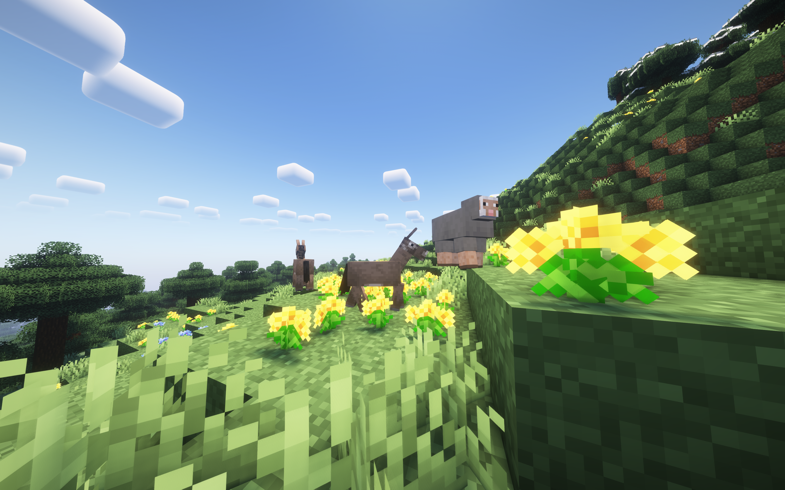
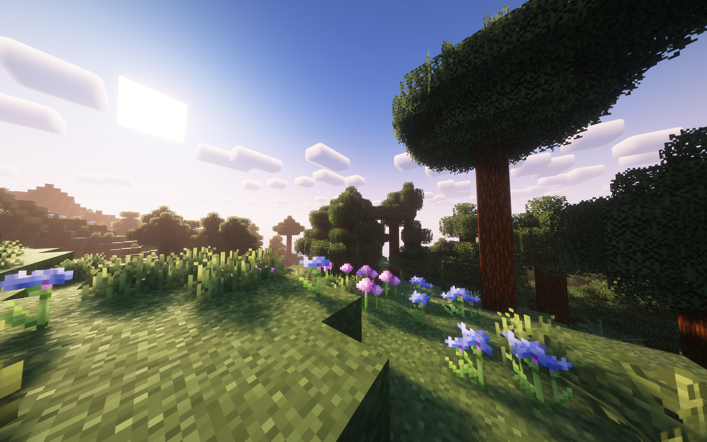
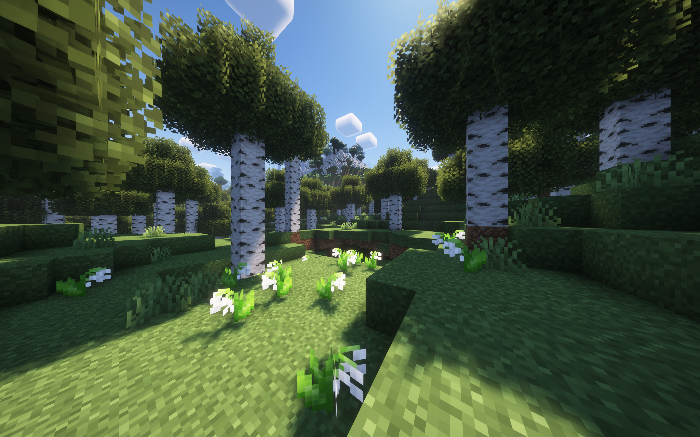
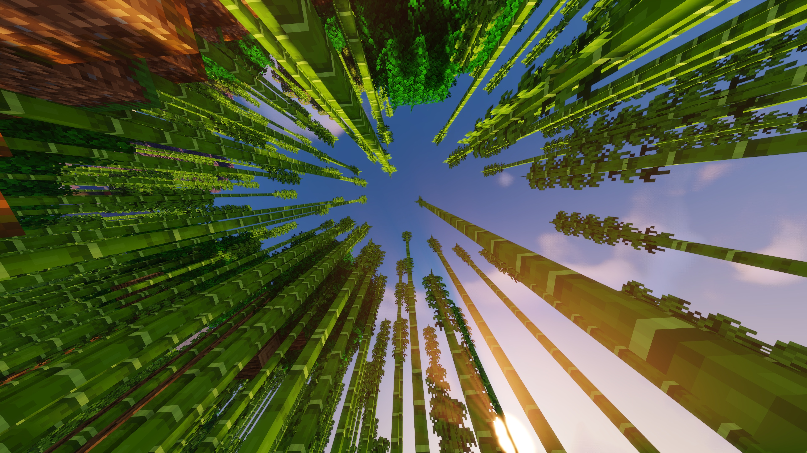
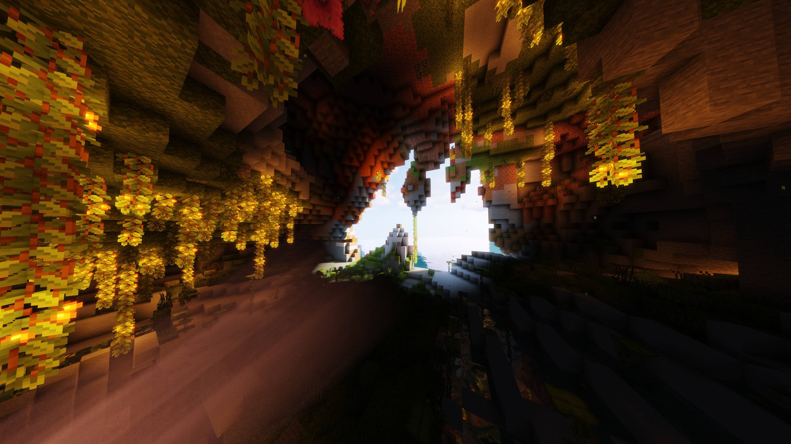

Modpack Optifine 1.21.1
This pack is based solely on Optifine, so it's best suited to people who want to stay with a vanilla game but have a better computer, enabling them to run this pack on servers or solo. The addition of shaders is an important point, as it contrasts totally with the basic game.
The "complementary shader" is a shader that adds a very special aesthetic to the game, rendering at night, in snowy areas or on water is a whole new level of realism. Here are some illustrations;





